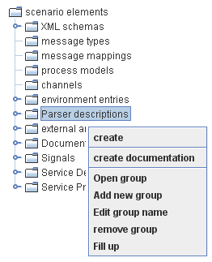

Parser descriptions

Topic content
Description
Parser transform elements of a text structure to a XML message.
Purpose of object
The stream parser is a deserializer, which can be used in every channel that reads data. The stream parser uses a parser description. The parser description is a Orchestra scenario element, which defines the structure of the read text. The structure must be declared in a special programming language.
Context menu
In the folder parser description are all parser descriptions located. Right clicking on the folder opens a context menu, where a new parser description can be created, an documentation can be created and the parser descriptions can be grouped. Right clicking on a element, enables the possibility to open and delete the element.

Configuration
Configuration of the deserializer
In a stream-oriented channel, a deserializer can be chosen. If a stream parser is chosen, a parser description must also be chosen in the configuration.
To use a self-defined parser, the following steps are required:
1. Open the stream channel, where the parser shall be used.
2. Choose 'stream parser' in the drop down menu named 'Deserializer'.
3. Click on the "..." -button.
4. In the opening dialog, the encoding conventions, the parser and the start of the parser description can be chosen.
5. After editing the dialog, click ok and save the changes in the channel.
Creation
Creation of a parser descriptor
1. Right click the element parser description and click create in the context menu.
2. Enter a name and possibly a description, then click on finish.
3. Orchestra is opening this new Parser description in the Working Area.
Create hierarchical parser description
1. Right click the element parser description and click create in the context menu.
2. Enter a name and possibly a description, check the checkbox to create a hierarchical parser description, then click on finish.
3. Orchestra is opening this new Parser description in the Working Area.